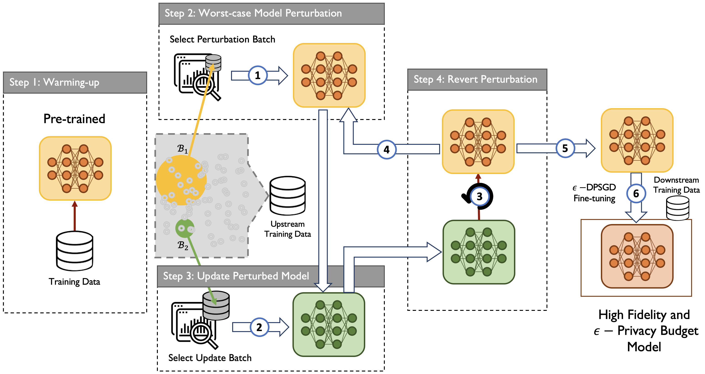

DPAdapter: Improving Differentially Private Deep Learning through Noise Tolerance Pre-training
USENIX Security 2024

Abstract
Recent developments have underscored the critical role of differential privacy (DP) in safeguarding individual data for training machine learning models. However, integrating DP oftentimes incurs significant model performance degradation due to the perturbation introduced into the training process, presenting a formidable challenge in the differentially private machine learning (DPML) field. To this end, several mitigative efforts have been proposed, typically revolving around formulating new DPML algorithms or relaxing DP definitions to harmonize with distinct contexts. In spite of these initiatives, the diminishment induced by DP on models, particularly large-scale models, remains substantial and thus, necessitates an innovative solution that adeptly circumnavigates the consequential impairment of model utility. In response, we introduce DPAdapter, a pioneering technique designed to amplify the model performance of DPML algorithms by enhancing parameter robustness. The fundamental intuition behind this strategy is that models with robust parameters are inherently more resistant to the noise introduced by DP, thereby retaining better performance despite the perturbations. DPAdapter modifies and enhances the sharpness-aware minimization (SAM) technique, utilizing a two-batch strategy to provide a more accurate perturbation estimate and an efficient gradient descent, thereby improving parameter robustness against noise. Notably, DPAdapter can act as a plug-and-play component and be combined with existing DPML algorithms to further improve their performance. Our experiments show that DPAdapter vastly enhances state-of-the-art DPML algorithms, increasing average accuracy from 72.92% to 77.09% with a privacy budget of ε = 4.
Resources
Citation
@inproceedings{WZZZMTW24,
author = {Zihao Wang and Rui Zhu and Dongruo Zhou and Zhikun Zhang and John Mitchell and Haixu Tang and Xiaofeng Wang},
title = {{DPAdapter: Improving Differentially Private Deep Learning through Noise Tolerance Pre-training}},
booktitle = {{USENIX Security}},
publisher = {USENIX Association},
year = {2024},
}